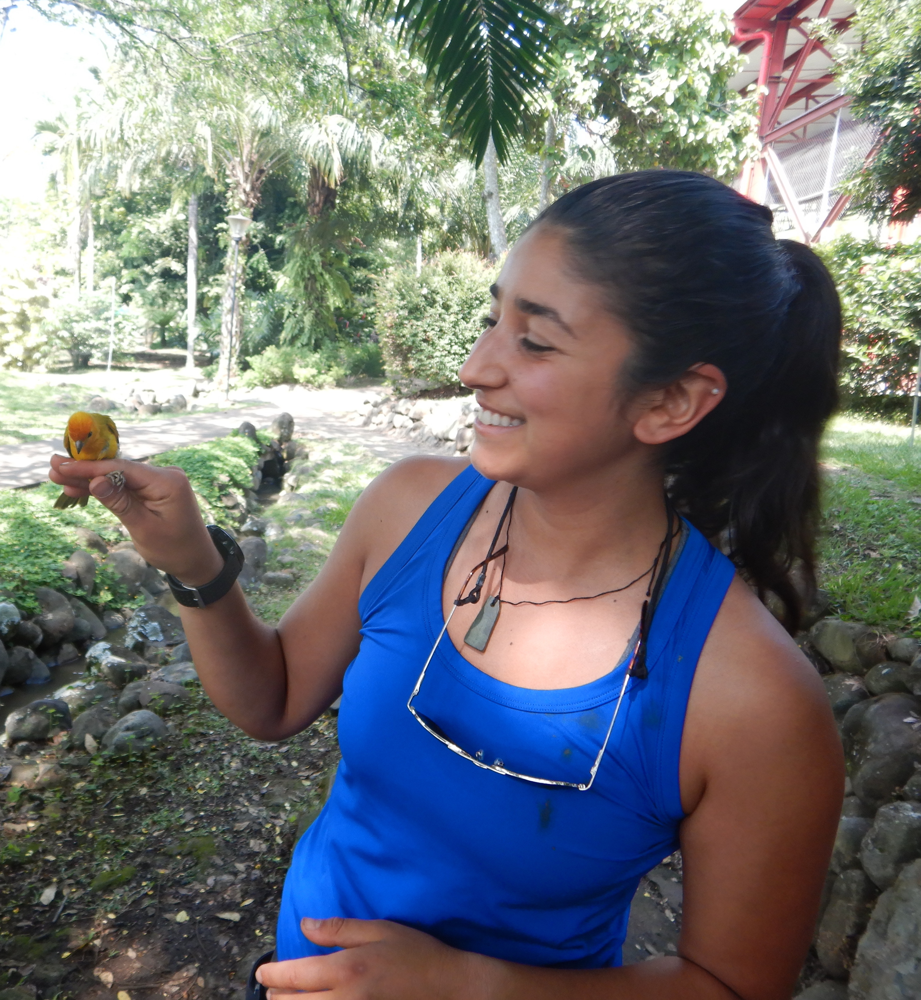

Valentina J. Alaasam, Ph.D.
Behavior * Physiology * Urbanization * Evolution
I am an integrative biologist interested in the behavioral, physiological, and eco-evolutionary mechanisms by which animals respond to anthropogenic change. I study this in cities - a ‘natural experiment’ where the speed and magnitude of change is unprecedented and the intersection of multiple stressors (e.g. light, noise and air pollution, heat, habitat loss/fragmentation, invasive species, etc.) is especially potent. I also use cities as a bridge to engage with local communities and leverage what we learn to promote urban designs that nurture both human diversity and biodiversity.
I am currently an NSF postdoctoral fellow studying how hummingbirds are adapting to urbanization. I received my Ph.D. in Ecology, Evolution and Conservation Biology from the University of Nevada, Reno, where my dissertation focused on the effects of light pollution on sleep, circadian rhythms, and stress physiology in zebra finches. Check out my research page for more information.
When I’m not doing science, I rock climb, backpack, run, ski uphill, cook, craft, and fight for social justice in both science and outdoor spaces. Learn more about me here.
